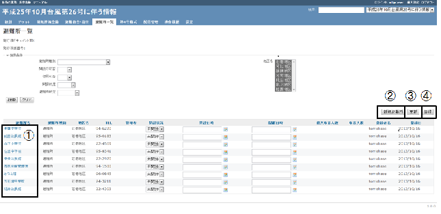
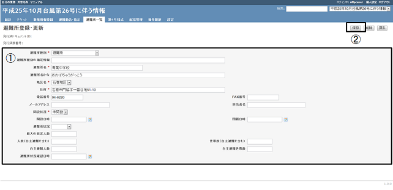

ログインし、タブメニュー「避難所一覧」をクリックします。
避難所一覧が表示され、①「避難所名」をクリックすることにより、詳細情報が表示されます。
新規登録する場合には、②「新規避難所」ボタンをクリックします。
また、③「更新」ボタンをクリックすることにより、「開設状況」・「開設日時」・「閉鎖日時」の情報が更新されます。④「登録」ボタンをクリックすることにより、現在の避難所情報が「【システム】避難所開設・閉鎖」トラッカーに新規にチケットが登録されます。
なお、④「登録」ボタンをクリックする前に、必ず③「更新」ボタンを必ずクリックし、情報の更新を実施してください。選択肢の変更、情報の入力だけでは、変更した情報が反映されません。

避難所を登録する場合には、①必要な情報を入力後、②「保存」ボタンをクリックすることにより、入力した情報で、新規登録・情報の更新を行います。
